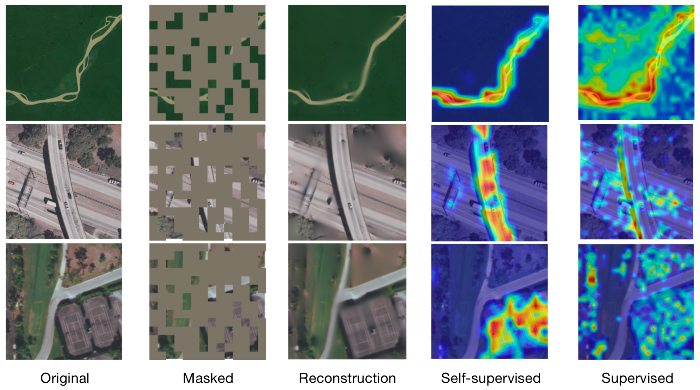
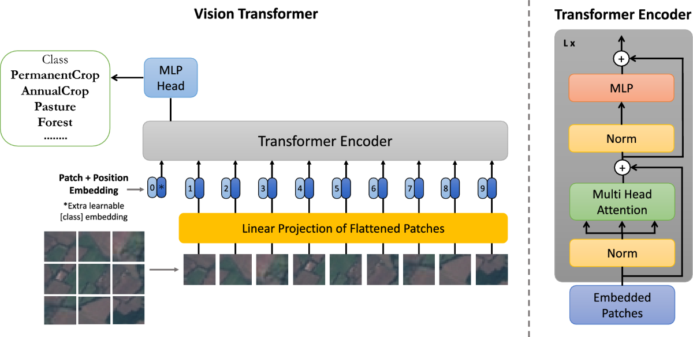
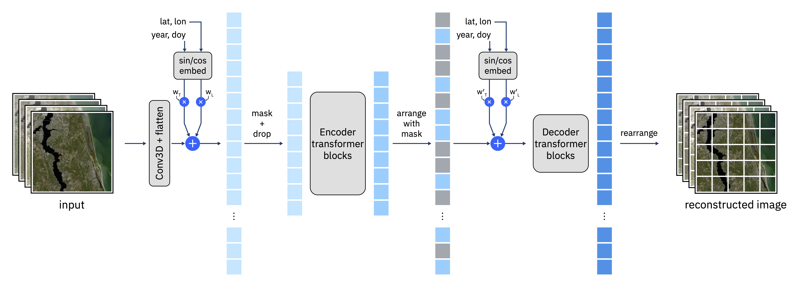

10.1 Evaluating Foundation Models Trained with Earth Observation Data
Lillianne Thomas ![]()
Wei Ji Leong
Daniel Wiesmann
Soumya Ranjan

⚠️ GPU Required: This notebook uses GPU acceleration for running foundation models. Please ensure you are using a GPU runtime (e.g., in Google Colab: Runtime → Change runtime type → GPU). If you are running low on compute units, be aware that model loading and inference steps will require GPU resources.
How to cite this chapter:
Thomas, L., Leong, W. J., Wiesmann, D., & Ranjan, S. (2026). Evaluating Foundation Models Trained with Earth Observation Data. Zenodo. https://doi.org/10.5281/zenodo.20547813 
Part of: Mayer, T., Bhandari, B., & Saah, D. (2026). EarthRISE Applied Artificial Intelligence and Deep Learning Book. Zenodo. https://doi.org/10.5281/zenodo.20547796 
Foundation models for Earth observation (EO) have the capacity to transform how critical real-world challenges are approached—from rapid flood mapping during disasters to monitoring deforestation and assessing agricultural health. By learning general-purpose representations from vast amounts of satellite imagery, these models can be quickly adapted to new tasks with minimal labeled data, dramatically reducing the time and cost of developing specialized applications. This chapter explores how to apply and evaluate these powerful tools for practical Earth science applications.
Introduction
A foundation model for Earth observation (EO) data is a large-scale machine learning model pre-trained on vast amounts of remote sensing data from various satellites and sensors, designed to learn general-purpose representations of the Earth’s surface and atmospheric phenomena. These models can capture diverse features from a variety of EO datasets, such as optical, radar, thermal, and multispectral sensor imagery, and can be fine-tuned for specific tasks like environmental monitoring, land use classification, climate analysis, and disaster response.
Most current foundation models are developed using a technique called self-supervised learning, in which models learn useful representations by solving tasks that are derived from the structure of the input data itself, without relying on human-annotated labels. These tasks, known as pretext tasks, are designed to uncover internal patterns or latent features within the data distribution by creating a supervisory signal from the data alone. A common example is masked reconstruction, where parts of the input are intentionally hidden or removed, and the model is trained to predict or reconstruct the missing content based on the visible portions. This encourages the model to capture the underlying structure and context of the data. Other approaches to self-supervision include contrastive learning, where the model learns to distinguish between similar and dissimilar pairs of data, and generative methods, which learn to synthesize or model entire input distributions. Unlike traditional supervised learning, which relies on labeled datasets, self-supervised learning does not require labeled examples (Chen et al., 2020). Self-supervised learning can be applied in many types of modeling tasks, including computer vision, and is gaining traction because it allows models to leverage vast amounts of unlabeled data whilst showing to be effective in improving performance across various domains.

Figure 1. A general self-supervised framework for remote sensing image classification, illustrating how models learn representations from unlabeled data through pretext tasks.
Source: “A General Self-Supervised Framework for Remote Sensing Image Classification” by Gao et al., 2022.
Vision Transformers (ViTs) are a class of deep learning architectures that apply the transformer framework—originally developed for natural language processing—to visual data. By dividing images into fixed-size patches and treating them as a sequence of tokens, ViTs model patterns and relationships in the data using self-attention mechanisms. While ViTs are commonly used as the architectural backbone in many vision foundation models, they are not foundation models by themselves. Rather, ViTs serve as one of the key building blocks in constructing such models. ViTs require large datasets because transformers do not have the built-in inductive biases (like translation invariance) that convolutional neural networks (CNNs) have (Dosovitskiy et al., 2021). The data provided to train these models must be crafted with thoughtful sampling and stratification to ensure the correct representations are learned, and biases or artifacts reduced. Once that is ensured, it is worth considering that the effectiveness of these models greatly improves with larger datasets by provisioning more examples and greater diversity, thereby allowing the model to learn robust representations that generalize well across different tasks. More data improves the learning signal and helps the model differentiate between subtle visual cues (Chen et al., 2020).

Figure 2. Transformer-based architecture for land use classification. Source: “Transformer-based land use and land cover classification with explainability using satellite imagery” by Khan et al., 2024
A foundation model’s extensive training regime enables its applicability across various downstream tasks. To achieve a properly trained FM, exposure to diverse and extensive data is needed in order to capture the variability and complexity inherent in real-world settings. For vision-specific foundation models, this means learning representations that can differentiate between millions of different phenomena, scenes, textures, lighting conditions, and other visual phenomena (Dosovitskiy et al., 2021). Large datasets help foundation models handle data bias and distribution shifts. For remote sensing vision tasks, biases can come from the sensor type, camera angle, geographic location, weather and lighting conditions under which images were captured (Radford et al., 2021). Training on diverse datasets that encompass multiple contexts and environments helps the model learn robust representations that generalize well across different conditions. Furthermore, training large models with millions (or billions) of parameters requires substantial data to avoid overfitting. When training vision-specific models, such as those using ViTs as the underlying architecture or applying a self-supervised learning paradigm, having large datasets ensures that the model does not merely memorize the training data but learns generalized features that are useful across tasks (Dosovitskiy et al., 2021). Yet, while large datasets can support the learning of generalized features rather than memorization, increasing dataset size alone does not guarantee generalization—especially as models grow in parameter count. Since larger models also have a higher capacity to memorize training data, which can lead to overfitting, the task of properly sampling and splitting the data is crucial. For practitioners, this means that a biased or overfitted model could produce unreliable predictions—for example, a flood detection model trained primarily on temperate regions might fail catastrophically when applied to monsoon-affected areas in South Asia. Ensuring meaningful generalization requires careful dataset sampling and experimental design. Researchers must ensure that evaluation data (e.g., test sets) contain spatial and/or temporal slices not seen during training to mitigate data leakage and provide more robust evidence that performance stems from generalization, not memorization.
As stated, many vision foundation models rely on self-supervised learning, where they generate their own supervision signals from the data itself by solving pretext tasks—such as predicting masked patches in an image or distinguishing between augmented views. While large datasets offer the diversity needed to expose models to a broad range of visual patterns and contexts, dataset size alone is not sufficient. The quality, representativeness, and sampling strategy of the data are equally critical. Poorly sampled or imbalanced data can bias the model or lead to overfitting, especially in self-supervised setups where the supervision signal comes entirely from the data distribution. Careful attention must be paid to spatial and temporal coverage, stratification across relevant factors (e.g., class distributions, lighting conditions, sensor types), and avoidance of data leakage. High-quality, well-curated datasets not only enhance learning but also ensure that the representations learned are robust, transferable, and capable of capturing fine-grained details like textures, colors, and shapes across diverse conditions.
How foundation models improve efficiency in machine learning workflows
Foundation models improve efficiency in machine learning workflows by enabling tasks such as zero-shot inference, transfer learning, and general-purpose feature extraction with minimal task-specific data or training. These theoretical benefits have been demonstrated in practical applications across domains. For example, Prithvi (Prithvi-EO-1.0 and 2.0) has shown state-of-the-art performance in flood detection and above ground biomass estimation with limited labeled data (Jakubik et al., 2023 and Szwarcman et al., 2025). CLAY has demonstrated robust zero-shot generalization across different geographies and resolutions. For example, it enabled zero shot detection of deforestation events in Schroer et al., 2025. These efficiencies translate to significant reductions in labeling costs and compute resources, especially in data-scarce or resource-constrained settings.
1. Reduced training costs
Traditional models often require training from scratch for every application, demanding significant computational resources and labeled datasets, which is especially challenging in earth observation contexts. Foundation models are pre-trained on massive datasets and can be fine-tuned for specific tasks using smaller labeled datasets, drastically reducing the costs of data annotation and training. Since these models undergo extensive pre-training on diverse datasets, they allow for the advantage of transfer learning to enable high performance with limited fine-tuning using smaller, domain-specific datasets. Suffice to say, foundation models reduce barriers to entry for users with limited resources.
Example: Instead of creating a wholly new model for deforestation detection, a pre-trained foundation model can be adapted in a fraction of the time and cost.
2. Faster development
Foundation models accelerate the development cycle by providing ready-to-use features or embeddings. This eliminates the need for extensive preprocessing and training, allowing users to focus on fine-tuning or directly deploying the model.
Example: A user working with PCA analysis on hurricane impacts can use pre-trained embeddings from a foundation model, reducing the need to engineer complex features.
3. Improved accuracy with limited data
Foundation models benefit from their extensive pre-training, making them robust and effective even when fine-tuned with limited domain-specific data. This reduces the need for expensive and time-consuming field campaigns or data collection.
Example: Foundation models trained with weather data may have learned to account for confounding weather variation that would otherwise have to be learned from the extensive collection and labeling of target features under different weather conditions.
4. Scalability across applications
A single foundation model can be repurposed for various tasks, avoiding the cost of building separate models for each application.
Example: A foundation model trained on global land cover data can be applied to soil health assessment, mangrove monitoring, or coral reef health analysis.
5. Democratizing access
With pre-trained foundation models available as open-source or through APIs, smaller organizations and researchers gain access to high-quality tools without investing in expensive infrastructure.
6. Good backbones (better than ImageNet or RGB-trained models)
Foundation models for EO are trained on specialized geospatial datasets (e.g. multi-spectral or radar satellite imagery), making their feature representations more aligned with EO tasks compared to models pre-trained on ImageNet or similar RGB datasets. EO data often includes multi-spectral bands (e.g., near-infrared) or radar data, which contain richer and more complex information than standard RGB images. - Example: A foundation model trained on multi-spectral imagery will perform better for tasks like vegetation health assessment than an RGB-trained ImageNet model.
7. Not as good as bespoke models, but get 90% there with 10% of the work
While foundation models may not achieve the same level of accuracy as task-specific bespoke models, they deliver competitive results with a fraction of the effort. Bespoke models demand extensive tuning, custom architectures, and domain expertise, which are costly and time-intensive. Foundation models offer a practical compromise. - Example: For deforestation detection, a bespoke model might achieve 95% accuracy, while a foundation model could achieve 90% accuracy with significantly less effort.
Limitations
All this said, foundation models are still a relatively new development in EO and have yet to see widespread validation across diverse real-world applications. Thus, while promising, their adoption is still in its early stages. Challenges like model bias, scalability, and performance in extreme conditions require further study. For instance, in precision agriculture, models may struggle with crop varieties not well-represented in training data; in urban planning, rapidly changing cityscapes may not be captured; and in polar research, the unique spectral signatures of ice and snow can confound models trained primarily on temperate regions. - Example: A foundation model trained on global land cover data might need more validation to ensure reliability in highly localized or unique environments.
Challenges
There are multiple aspects of Earth Observation Foundation Models (EOFM) that are unique to the broader scope of foundation models research. Earth observation imagery is very diverse in how it is captured. The instruments capture various frequencies at different wavelength and band widths, the ground sampling distance of the captured imagery ranges from a few centimeters to hundreds of meters, and the same location is often captured at multiple points in time. These substantial differences in the spectral, spatial, and temporal resolution make it harder for models to learn generalized patterns. In addition, earth observation data also has unique metadata characteristics that can be deterministic for the quality and the potential content of a dataset. Examples are the coordinate reference system used, the latitude and longitude location of the captured image, view angles that may be different from image to image, and data provenance artifacts such as how the data is stored and served across various providers.
Foundation models in EO would ideally capture and learn from as many of the key dimensions and metadata items as possible. An ideal model would be trained on a wide range of variation in these parameters (spatial, spectral, temporal resolutions, as well as geography, for example) during the learning process, via methods like global sampling over multiple years and seasons, as well as for a wide range of different sensors at different resolutions. Similarly, models would ideally accept a wide range of formats and image sizes during inference.
While no single model to date fully integrates all relevant dimensions of remote sensing complexity—such as temporal dynamics, multi-sensor fusion, and variable spatial and spectral resolutions—there are promising efforts in each area: for instance, Prithvi and Presto explore temporal modeling, DOFA addresses multi-sensor fusion, and Clay supports variable image resolutions and types. However, the goal need not be a single, monolithic model that captures all aspects simultaneously. In practice, combining multiple specialized models in modular or hierarchical architectures can offer a more scalable and adaptable approach. These modular systems can collaboratively represent the rich diversity of the remote sensing domain, allowing for flexible subsetting, expansion, and fine-tuning across tasks. It’s important to think creatively about architecture design, embracing hybrid strategies that align with the diverse and evolving nature of geospatial data.
Using and evaluating EOFM
In the next portion, we will work through interactive demonstrations of how to use and evaluate EOFM for real domain-specific downstream tasks. Specifically, we will leverage two different EOFMs to generate embeddings for imagery before and after a natural hazard, and determine if these embeddings capture a descriptive pattern. We will also use these EOFMs in a fine tuning capacity to detect the natural hazard. After fine tuning, we’ll calculate the performance scores. At the end, you will have worked through two different methods of leveraging EOFM using two different EOFM base models.
The two models we will work with include: - Prithvi — NASA/IBM’s temporal Vision Transformer trained on Harmonized Landsat-Sentinel-2 (HLS) data, optimized for spatiotemporal analysis of Earth observation imagery. - Clay — A flexible EOFM supporting variable image resolutions and sensor types, designed for broad applicability across diverse remote sensing tasks.
To begin evaluating the EOFMs, we will start with the Prithvi model.
The Prithvi HLS foundation model is an EOFM developed collaboratively by IBM and NASA. It leverages a Vision Transformer (ViT) architecture and is pre-trained on the Harmonized Landsat-Sentinel-2 (HLS) dataset. The model incorporates a Masked Autoencoder (MAE) self-supervised learning approach. Its design is optimized for spatiotemporal analysis, using 3D patch embeddings to encode spatial and temporal features from input data formatted as a sequence of geospatial “videos” (B, C, T, H, W — bands, channels, time, height, width).
The architecture leverages temporal embeddings to model time-series dynamics and spatial embeddings to capture geospatial structure. Spectral inputs to Prithvi include six key spectral bands—Blue, Green, Red, Narrow NIR, SWIR1, and SWIR2—provided as geotiff files in reflectance units.

Figure 3. Prithvi foundation model architecture showing the masked autoencoder approach.
Source: Hugging Face - Prithvi-EO-2.0-300M
It has been fine-tuned for applications such as flood mapping, burn scar detection, and land cover classification. The pre-trained weights and fine-tuning workflows are openly available on platforms like Hugging Face, promoting accessibility and further development by the research community.
Prithvi 2.0 Citation:
@article{Prithvi-EO-V2-preprint,
author = {Szwarcman, Daniela and Roy, Sujit and Fraccaro, Paolo and Gíslason, Þorsteinn Elí and Blumenstiel, Benedikt and Ghosal, Rinki and de Oliveira, Pedro Henrique and de Sousa Almeida, João Lucas and Sedona, Rocco and Kang, Yanghui and Chakraborty, Srija and Wang, Sizhe and Kumar, Ankur and Truong, Myscon and Godwin, Denys and Lee, Hyunho and Hsu, Chia-Yu and Akbari Asanjan, Ata and Mujeci, Besart and Keenan, Trevor and Arévolo, Paulo and Li, Wenwen and Alemohammad, Hamed and Olofsson, Pontus and Hain, Christopher and Kennedy, Robert and Zadrozny, Bianca and Cavallaro, Gabriele and Watson, Campbell and Maskey, Manil and Ramachandran, Rahul and Bernabe Moreno, Juan},
title = {{Prithvi-EO-2.0: A Versatile Multi-Temporal Foundation Model for Earth Observation Applications}},
journal = {arXiv preprint arXiv:2412.02732},
year = {2024}
}Run Prithvi
This exercise involves carrying out a complete analysis from beginning to end. The steps include: 1. Selecting a location and time range of interest. 2. Downloading Harmonized Landsat and Sentinel-2 (HLS) imagery for the specified parameters (make sure you have an Earth Data login and/or .netrc file for this). 3. Loading the model checkpoint. 4. Formatting the data to match the model’s requirements. 5. Running the model on the prepared imagery. 6. Performing PCA and TSNE to analyze the model’s output (embeddings). 7. Train a classifier on top of the model’s embeddings.
Please start by installing the auxiliary libraries using the line below. This notebook requires Python version ≥ 3.10. If using Google Colab, you do not need any external requirements file, just these two lines below.
The imagery we will use requires authentification. As mentioned above, for this you will need to have an Earth Data login and create a .netrc file (which we will do below using a library called earthaccess).
Calling earthaccess.login with persist=True will create a .netrc file for you.
Show code
import os
import urllib
import geopandas as gpd
import math
import numpy as np
import pandas as pd
import pystac_client
import stackstac
import torch
import yaml
import time
from box import Box
from einops import rearrange, reduce
from matplotlib import pyplot as plt
from rasterio.enums import Resampling
from shapely.geometry import Point, mapping
from sklearn import decomposition, svm
from sklearn.manifold import TSNE
from sklearn.metrics import pairwise_distances
from torchvision.transforms import v2
from terratorch import BACKBONE_REGISTRYDefine Location and Date of Interest
For this example, we analyze a region in Pakistan that experienced a monsoon flood. We will generate embeddings for the area with the model and analyze any relationships within those.
Natural Disaster in Focus
The 2022 Pakistan floods stand as one of the most catastrophic flood events in recent history. Between July and August 2022, unprecedented monsoon rainfall triggered massive flooding across Pakistan, affecting approximately 33 million people and inundating much of the country. Vast agricultural lands were submerged, millions were displaced, and critical infrastructure was destroyed.
Organizations like ICIMOD played a vital role in disaster response, providing satellite-based assessments of crop losses and flood extent (ICIMOD Flood Assessment). By applying EOFMs to this use case, we demonstrate how foundation models can rapidly support flood mapping and damage assessment—capabilities that are essential for timely humanitarian response and post-disaster recovery planning.
Region of Interest: Padidan, Pakistan
Our study area is centered on Padidan in Pakistan’s Sindh Province, one of the regions most severely impacted by the floods. During this period, the Indus River and its tributaries overflowed, submerging the surrounding agricultural lands and displacing local communities.
Key References: - FloodList: Pakistan Monsoon Floods August 2022 - AGU: Climate and Hydrological Analysis of the 2022 Pakistan Floods - World Bank: Pakistan Flood Damages Assessment - ICIMOD Library: Flood Assessment
This historical context underscores the importance of rapid, accurate flood mapping—a task well-suited for Earth Observation Foundation Models.
Retrieve Data from the STAC Catalog
Using the specified location and dates, let’s obtain Harmonized Landsat and Sentinel-2 (HLS) imagery with stackstac. We’ll parameterize our search query so as to only retrieve the desired STAC items for analysis.
Show code
STAC_API = "https://cmr.earthdata.nasa.gov/stac/LPCLOUD"
COLLECTION = "HLSS30.v2.0"
# Search the catalogue
catalog = pystac_client.Client.open(STAC_API)
search = catalog.search(
collections=[COLLECTION],
datetime=f"{start}/{end}",
intersects=mapping(Point(lon, lat)) ,
max_items=100,
query={"eo:cloud_cover": {"lt": 50}},
)
all_items = search.item_collection()
all_items
item = all_items[0]
item
# Use S3 links for downloading imagery
for item in all_items:
for key in item.assets.keys():
if "alternate" in item.assets[key].extra_fields:
url = urllib.parse.urlparse(
item.assets[key].extra_fields["alternate"]["s3"]["href"]
)
item.assets[key].href = f"https://{url.netloc}.s3.amazonaws.com{url.path}"
item.assets[key].href = item.assets[key].extra_fields["alternate"]["s3"][
"href"
]
items = []
dates = []
for item in all_items:
items.append(item)
dates.append(item.datetime.date())
print(f"Found {len(items)} items")Create a Bounding Box for the Area of Interest
We’ll generate this bounding box in the projection of the dataset to ensure appropriately sized image chips.
Show code
# Extract coordinate system
epsg = 32642 # For Padidan, Pakistan.
# Convert point of interest into the image projection
# (assumes all images are in the same projection)
poidf = gpd.GeoDataFrame(
pd.DataFrame(),
crs="EPSG:4326",
geometry=[Point(lon, lat)],
).to_crs(epsg)
# Get lat and lon in meters (UTM), where lat and lon are at the center of our intended image chip.
coords = poidf.iloc[0].geometry.coords[0]
# Create bounds in projection
size = 256
gsd = 30
# This creates a bounding box of 256 × 30m = 7680m × 7680m (7.68 km square), centered on the point.
bounds = (
coords[0] - (size * gsd) // 2,
coords[1] - (size * gsd) // 2,
coords[0] + (size * gsd) // 2,
coords[1] + (size * gsd) // 2,
)Retrieve the imagery data
Show code
# Retrieve the pixel values, for the bounding box in
# the target projection. In this example we use the
# RGB, NIR and SWIR bands.
# Clip the imagery to the defined bounds.
# Use nearest-neighbor resampling to avoid interpolation artifacts.
stack = stackstac.stack(
items,
bounds=bounds,
snap_bounds=False,
epsg=epsg,
resolution=gsd,
dtype="float64",
rescale=False,
fill_value=0,
assets=["B02", "B03", "B04", "B05", "B06", "B07"],
resampling=Resampling.nearest,
)
print(f"Working with stack of size {stack.shape}")
stack = stack.compute()
stackReview the Downloaded Imagery
The imagery dataset contains four pre-flood images two during-flood images (one of which is cloudy) and 12 post-flood images.
Load the Model
Now that we have the imagery prepared, the next step is to load the model for analysis.
Estimated Time: Model loading typically takes 2-5 minutes depending on your internet connection, as the model weights (~1.3 GB) are downloaded from Hugging Face.
Hugging Face Authentication (Optional but Recommended): If you encounter authentication errors or timeouts when loading the model, you can authenticate with Hugging Face using one of these methods:
Using
huggingface-cli(recommended):This will prompt you to enter your Hugging Face token. You can create a token at https://huggingface.co/settings/tokens.
Using Google Colab Secrets: Add your Hugging Face token as a secret named
HF_TOKENin Colab (click the key icon in the left sidebar), then restart your session.Programmatic login:
Show code
# Find and print available Prithvi models in the model registry
print([model_name for model_name in BACKBONE_REGISTRY if "terratorch_prithvi" in model_name])
# Check that the model we want to use is in the registry
"terratorch_prithvi_eo_v2_300" in BACKBONE_REGISTRY
# instantiate our desired model
# NOTE: the backbone registry prefix (e.g., `terratorch`) is optional
model = BACKBONE_REGISTRY.build("prithvi_eo_v2_300", pretrained=True)Format Band Pixel Data for the Model
Now we will transform the imagery stack into the format required by the model. Prithvi uses short time series of four images, “quadruplets,” as input. Due to limited data, overlapping dates are used to create quadruplets: the first spans dates 1 to 4, the second covers dates 2 to 5, and so forth.
Show code
chips = []
# Calculate number of valid quadruplets (sequences of 4 timesteps)
num_chips = max(0, stack.shape[0] - 3) # stack.shape[0] is number of timesteps
print(f"Creating {num_chips} chips from {stack.shape[0]} timesteps")
for i in range(num_chips):
chips.append(stack.isel(time=slice(i, i + 4)).values)
chips[0].shapeWe get n chips to represent the number combinations of temporal sequences where the time series length is 4.
Execute the Model
Now we pass the prepared datacube to the model to generate one embedding vector for each image.
Show code
embeddings = []
start_time = time.time()
# Iterate over each chip (sequence of 4 timesteps)
for ts in chips:
# Rearrange tensor to match model input format: add batch dimension and put time in the middle
ts = rearrange(ts, "t c h w -> 1 c t h w")
ts = ts.astype(np.float32)
# Only process chips with 4 time steps (quadruplets)
if ts.shape[2] == 4:
embedding = model.forward(torch.from_numpy(ts)) # Run model to get embeddings
# Extract the class token (represents a summary or global representation of the entire input sequence (here, 4 timesteps of the chip))
# `:` means all batches — here, size 1, `0` means the first token (the CLS token), `:` means all embedding dimensions
# so the shape of cls_embedding before unraveling is (batch_size, embedding_dim), and if the batch size is 1, then after it is (embedding_dim,)
cls_embedding = embedding[0][:, 0, :].detach().cpu().numpy().ravel()
embeddings.append(cls_embedding)
else:
print(f"Skipping chip with {ts.shape[2]} time steps")
embeddings = np.array(embeddings)
print(f"Generated {len(embeddings)} embeddings in {time.time() - start_time:.1f} seconds")Analyze the Embeddings
Now we will run a simple analysis to find any patterns in the model’s learned representations of the data. PCA is applied to reduce each embedding to a single value. Embeddings, whether class or patch level, from models like transformers are usually high-dimensional vectors (e.g., 768, 1024 dims). PCA reduces this to fewer dimensions (e.g., 1 or 2) for easier analysis or visualization. By projecting embeddings into 2D with PCA, you can visualize how samples relate to each other—whether they cluster by class, time, or some other property. This is because PCA extracts principal components that capture the largest variance in the embeddings, potentially removing noise or irrelevant features and focusing on the most important aspects. As such, lower-dimensional representations from PCA can be used as input features for clustering, classification, or anomaly detection algorithms with less computational cost and potentially better generalization.
The PCA-reduced embeddings, as you’ll see, appear to be grouped into four categories within PCA space: pre-flood images, during flood images, cloudy images, and post-flood images.
Show code
# Define flood phase indices for visualization
# These indices correspond to the temporal position of images in the stack
PRE_FLOOD_IDX = slice(0, 5) # Images before the flood
FLOOD_IDX = slice(5, 9) # Images during active flooding
POST_FLOOD_IDX = slice(9, None) # Images after flood waters receded
CLOUDY_IDX = 7 # Index of cloudy image
pca = decomposition.PCA(n_components=1)
pca_result = pca.fit_transform(embeddings)
plt.figure(figsize=(10, 5))
plt.xticks(rotation=-45)
# Plot points by flood phase
plt.scatter(stack.time[PRE_FLOOD_IDX], pca_result[PRE_FLOOD_IDX], color="blue", label="Pre-flood", s=80)
plt.scatter(stack.time[FLOOD_IDX], pca_result[FLOOD_IDX], color="red", label="During flood", s=80)
plt.scatter(stack.time[CLOUDY_IDX], pca_result[CLOUDY_IDX], color="green", label="Cloudy", s=80)
plt.scatter(stack.time[POST_FLOOD_IDX][:num_chips-9], pca_result[POST_FLOOD_IDX], color="orange", label="Post-flood", s=80)
plt.xlabel("Date")
plt.ylabel("PCA Component 1")
plt.title("PCA Projection of Prithvi Embeddings Over Time")
plt.legend()
plt.tight_layout()
plt.show()Embeddings for Each Time Step
The model also generates embeddings for individual time steps. These embeddings are extracted for each input quadruplet and visualized using PCA, revealing similar clustering patterns.
The first version generates an embedding for each timesep in each quadruplet, which encounters some redundancy as a given timestep is inherently present in multiple quadruplets.
Show code
long_embeddings_quadruplets = []
# Iterate over each chip (sequence of 4 timesteps)
for ts in chips:
# Rearrange tensor to match model input format: add batch dimension and put time in the middle
ts = rearrange(ts, "t c h w -> 1 c t h w")
ts = ts.astype(np.float32)
# Only process chips with 4 time steps (quadruplets)
if ts.shape[2] == 4:
embedding = model.forward(torch.from_numpy(ts)) # Run model to get embeddings
# Extract class token (embedding vector for the whole chip (4 timesteps combined))
cls_embedding = embedding[0][:, 0, :].detach().cpu().numpy().ravel()
# Reshape to (t, n, d): time, patch tokens, embedding dim
embedding = rearrange(embedding[0][:, 1:, :], "1 (t n) d -> 1 t n d", t=4)[0]
# Average patch tokens per timestep: shape becomes (t, d)
# gives us one averaged patch embedding per timestep
embedding = reduce(embedding, "t n d -> t d", "mean").detach().numpy()
# Store the embedding quadruplet
t0, t1, t2, t3 = embedding
long_embeddings_quadruplets.extend([t0] + [t1] + [t2] + [t3])This second version stores only one embedding for a given timestep (appends the embedding based on its time index if that time index has not already been added).
Show code
long_embeddings_dict = {}
# Iterate over each chip (sequence of 4 timesteps) and its index
for i, ts in enumerate(chips):
time_ids = chip_time_indices[i] # Global timestep indices for this chip, e.g., [0, 1, 2, 3]
# Rearrange tensor to match model input format: add batch dimension and put time in the middle
ts = rearrange(ts, "t c h w -> 1 c t h w").astype(np.float32)
# Only process chips with 4 time steps (quadruplets)
if ts.shape[2] == 4:
with torch.no_grad():
embedding = model.forward(torch.from_numpy(ts)) # Run model to get embeddings
# Extract CLS token, reshape to (t, n, d): time, patch tokens, embedding dim
embedding = rearrange(embedding[0][:, 1:, :], "1 (t n) d -> 1 t n d", t=4)[0]
# Average patch tokens per timestep: shape becomes (t, d)
# gives us one averaged patch embedding per timestep
embedding = reduce(embedding, "t n d -> t d", "mean").detach().numpy()
# Store each timestep's embedding using the original (global) time index
for j, t_idx in enumerate(time_ids):
if t_idx not in long_embeddings_dict:
long_embeddings_dict[t_idx] = embedding[j]
# Reconstruct a list of embeddings ordered by all 22 possible timesteps (if available)
all_timesteps = list(range(22))
long_embeddings = [long_embeddings_dict[t] for t in all_timesteps if t in long_embeddings_dict]Show code
# Run PCA
pca = decomposition.PCA(n_components=1)
pca_result = pca.fit_transform(long_embeddings)
plt.figure(figsize=(10, 5))
plt.xticks(rotation=-45)
# Plot points by flood phase
plt.scatter(stack.time[PRE_FLOOD_IDX], pca_result[PRE_FLOOD_IDX], color="blue", label="Pre-flood", s=80)
plt.scatter(stack.time[FLOOD_IDX], pca_result[FLOOD_IDX], color="red", label="During flood", s=80)
plt.scatter(stack.time[CLOUDY_IDX], pca_result[CLOUDY_IDX], color="green", label="Cloudy", s=80)
plt.scatter(stack.time[POST_FLOOD_IDX], pca_result[POST_FLOOD_IDX], color="orange", label="Post-flood", s=80)
plt.xlabel("Date")
plt.ylabel("PCA Component 1")
plt.title("PCA Projection of Per-Timestep Embeddings Over Time")
plt.legend()
plt.tight_layout()
plt.show()Visualizing Flood Patterns with t-SNE
While PCA provides a linear dimensionality reduction, t-SNE (t-distributed Stochastic Neighbor Embedding) captures non-linear relationships in the embedding space. t-SNE is particularly effective at revealing clustering patterns by preserving local neighborhood structure—making it well-suited for visualizing how the model distinguishes between different flood states (see Figure 5).
In the context of our flood analysis, t-SNE helps us understand whether the foundation model’s embeddings naturally separate pre-flood conditions (e.g. normal agricultural land, urban areas and water bodies) from active flooding (e.g. inundated areas, turbid water) and post-flood recovery (e.g. receding waters, sediment deposits). If the model has learned meaningful representations of these hydrological states, we expect to see distinct clusters corresponding to each phase of the flood event.
Show code
long_embeddings_array = np.array(long_embeddings)
tsne = TSNE(n_components=2, random_state=42, perplexity=min(5, len(long_embeddings)-1))
tsne_result = tsne.fit_transform(long_embeddings_array)
plt.figure(figsize=(8, 6))
plt.scatter(tsne_result[PRE_FLOOD_IDX, 0], tsne_result[PRE_FLOOD_IDX, 1], color='blue', label='Pre-flood', s=100)
plt.scatter(tsne_result[FLOOD_IDX, 0], tsne_result[FLOOD_IDX, 1], color='red', label='During flood', s=100)
plt.scatter(tsne_result[CLOUDY_IDX, 0], tsne_result[CLOUDY_IDX, 1], color='green', label='Cloudy', s=100)
plt.scatter(tsne_result[POST_FLOOD_IDX, 0], tsne_result[POST_FLOOD_IDX, 1], color='orange', label='Post-flood', s=100)
plt.xlabel('t-SNE Dimension 1')
plt.ylabel('t-SNE Dimension 2')
plt.title('t-SNE Projection of Prithvi Embeddings')
plt.legend()
plt.tight_layout()
plt.show()Interpretation: Prithvi Embeddings
The PCA and t-SNE visualizations above reveal that Prithvi’s embeddings capture meaningful distinctions between flood phases. Pre-flood images (blue) cluster separately from active flooding images (red), indicating the model has learned to differentiate normal land conditions from storm-affected areas. The post-flood images (orange/yellow) form their own cluster. The cloudy image (green) appears as an outlier, demonstrating that the model’s embeddings are also sensitive to atmospheric interference—an important consideration for operational flood mapping where cloud contamination is common.
Train a Model using the Embeddings as Features
Now we will train a classifier head for detecting flood events on top of the embeddings. Our dataset is tiny (22 samples), so we will choose a suitable method: Support Vector Machine. An SVM is a supervised machine learning model that tries to find the best boundary (or boundaries) between different classes of data in a feature space. At this point, we’re treating the EOFM as a feature extractor (fixed), and only training a small classifier (the SVM) on top. Given that, SVM fits well — it learns fast and doesn’t overfit as easily as deeper classifiers.
Show code
# Label the images we downloaded
# 0 = Cloud
# 1 = Pre-flood
# 2 = During-flood
# 3 = Post-flood
labels = np.array([1, 1, 1, 1, 1, 2, 2, 0, 2, 3, 3, 3, 3, 3, 3, 3, 3, 3, 3, 3, 3, 3])
# Split into fit and test manually, with an effort to have all 3 classes in both sets
# (since there is only one cloudy sample, we use it for training only)
fit = [0, 2, 4, 6, 7, 8, 10, 12, 14, 16, 18, 20]
test = [1, 3, 5, 9, 11, 13, 15, 17, 19, 21]
# Train a support vector machine model
long_embeddings = np.array(long_embeddings)
clf = svm.SVC()
clf.fit(long_embeddings[fit], labels[fit])
# Predict classes on test set
prediction = clf.predict(long_embeddings[test])
# Match for SVM
match = np.sum(labels[test] == prediction)
print(f"Matched {match} out of {len(test)} correctly")Clay
The Clay Foundation model is another open source EOFM. It also utilizes a Vision Transformer (ViT) architecture with a masked autoencoder approach. The encoder of the model consists of several layers, each with multiple attention heads, allowing it to capture complex spatial and temporal relationships in the data. The self-attention mechanism enables it to understand both local and global features within satellite imagery. The decoder is structured similarly but with fewer layers and attention heads, and it is optimized for efficient reconstruction during the pre-training phase. The architecture uses an MLP (Multi-Layer Perceptron) layer for feature extraction.
The model is trained on a large dataset that combines multi-modal geospatial data from Landsat 8 and 9, Sentinel-2 L2A, Sentinel-1 RTC, NAIP and LINZ. A sampling strategy carefully curated to cover a variety of land types was implemented, ensuring diverse geographical and seasonal representation.
The architecture and data inputs make Clay highly flexible.
For more details, you can visit the official Clay Foundation website or the documentation website.
Let’s get the necessary code for Clay.
The tile size for Prithvi was 256. For Clay, it is 224, so we will need to re-create our stacked dataset using that value.
Show code
# Create bounds in projection
size = 224
gsd = 30
bounds = (
coords[0] - (size * gsd) // 2,
coords[1] - (size * gsd) // 2,
coords[0] + (size * gsd) // 2,
coords[1] + (size * gsd) // 2,
)
# Retrieve the pixel values, for the bounding box in
# the target projection. In this example we use the
# RGB, NIR and SWIR bands.
stack = stackstac.stack(
items,
bounds=bounds,
snap_bounds=False,
epsg=epsg,
resolution=gsd,
dtype="float64",
rescale=False,
fill_value=0,
assets=["B02", "B03", "B04", "B05", "B06", "B07"],
resampling=Resampling.nearest,
)
print(f"Working with stack of size {stack.shape}")
stack = stack.compute()
stackLoad the Model
We now have the data to analyse, let’s load the model. But first, we need to rename the bands to match what’s expected in the config file.
Show code
if "band" in stack.coords:
stack = stack.assign_coords(band=["red" if b == "B04" else b for b in stack.band.values])
stack = stack.assign_coords(band=["green" if b == "B03" else b for b in stack.band.values])
stack = stack.assign_coords(band=["blue" if b == "B02" else b for b in stack.band.values])
stack = stack.assign_coords(band=["nir" if b == "B05" else b for b in stack.band.values])
stack = stack.assign_coords(band=["swir16" if b == "B06" else b for b in stack.band.values])
stack = stack.assign_coords(band=["swir22" if b == "B07" else b for b in stack.band.values])Again, here you have the option to load the model the following way or with the HuggingFace library.
Show code
device = torch.device("cuda") if torch.cuda.is_available() else torch.device("cpu")
ckpt = "https://huggingface.co/made-with-clay/Clay/resolve/main/v1.5/clay-v1.5.ckpt"
torch.set_default_device(device)
model = ClayMAEModule.load_from_checkpoint(
ckpt,
model_size="large",
metadata_path="./configs/metadata.yaml",
mask_ratio=0.0,
shuffle=False,
)
model.eval()
model = model.to(device)Prepare Band Metadata for Model Input
This step is the most technical so far. It involves processing the imagery stack and converting its data into the format required by the model. This includes normalizing the latitude/longitude and the imagery’s date values.
The Clay model is designed to accept any combination of bands in any order, even from different platforms. However, the model requires metadata about each band, including its central wavelength and normalization parameters. This information allows the model to standardize the data and correctly interpret each band based on its wavelength.
For Sentinel-2, we can extract these details from the model’s metadata file. For other platforms, a custom approach may be needed to provide this information. For simplicity here, we utilize the Sentinel-2 parameters for our HLS imagery.
Show code
# Extract mean, std, and wavelengths from metadata
platform = "sentinel-2-l2a"
metadata = Box(yaml.safe_load(open("configs/metadata.yaml")))
mean = []
std = []
waves = []
# Use the band names to get the correct values in the correct order.
for band in stack.band:
mean.append(metadata[platform].bands.mean[str(band.values)])
std.append(metadata[platform].bands.std[str(band.values)])
waves.append(metadata[platform].bands.wavelength[str(band.values)])
# Prepare the normalization transform function using the mean and std values.
transform = v2.Compose(
[
v2.Normalize(mean=mean, std=std),
]
)Convert Band Pixel Data to Model Format
This step involves transforming the imagery stack into the format required by the model. It includes normalizing the latitude/longitude and the imagery’s date values.
Show code
# Prep datetimes embedding using a normalization function from the model code.
def normalize_timestamp(date):
week = date.isocalendar().week * 2 * np.pi / 52
hour = date.hour * 2 * np.pi / 24
return (math.sin(week), math.cos(week)), (math.sin(hour), math.cos(hour))
datetimes = stack.time.values.astype("datetime64[s]").tolist()
times = [normalize_timestamp(dat) for dat in datetimes]
week_norm = [dat[0] for dat in times]
hour_norm = [dat[1] for dat in times]
# Prep lat/lon embedding using a normalization function from the model code.
def normalize_latlon(lat, lon):
lat = lat * np.pi / 180
lon = lon * np.pi / 180
return (math.sin(lat), math.cos(lat)), (math.sin(lon), math.cos(lon))
latlons = [normalize_latlon(lat, lon)] * len(times)
lat_norm = [dat[0] for dat in latlons]
lon_norm = [dat[1] for dat in latlons]
# Normalize pixels
pixels = torch.from_numpy(stack.data.astype(np.float32))
pixels = transform(pixels)Combine Metadata and Pixels
All required inputs, including metadata and transformed pixel values, are compiled into a single dictionary.
Show code
# Prepare additional information
datacube = {
"platform": platform,
"time": torch.tensor(
np.hstack((week_norm, hour_norm)),
dtype=torch.float32,
device=device,
),
"latlon": torch.tensor(
np.hstack((lat_norm, lon_norm)), dtype=torch.float32, device=device
),
"pixels": pixels.to(device),
"gsd": torch.tensor(stack.rio.resolution()[0], device=device),
"waves": torch.tensor(waves, device=device),
}Execute the Model
The datacube is passed to the model, which generates one embedding vector per image.
Show code
import time
start_time = time.time()
with torch.no_grad():
unmsk_patch, unmsk_idx, msk_idx, msk_matrix = model.model.encoder(datacube)
# The first embedding is the class token, which is the
# overall single embedding. We extract that for PCA below.
embeddings = unmsk_patch[:, 0, :].cpu().numpy()
print(f"Generated {len(embeddings)} embeddings in {time.time() - start_time:.1f} seconds")Analyze the Embeddings
A straightforward way to analyze the embeddings is by reducing each to a single value using Principal Component Analysis (PCA). This involves fitting a PCA model to the embeddings and performing dimensionality reduction. The resulting PCA space reveals three distinct groups: earlier images, cloudy images, and post-flood images, each occupying a different range within the PCA space.
Show code
# Run PCA
pca = decomposition.PCA(n_components=1)
pca_result = pca.fit_transform(embeddings)
plt.figure(figsize=(10, 5))
plt.xticks(rotation=-45)
# Plot points by flood phase
plt.scatter(stack.time[PRE_FLOOD_IDX], pca_result[PRE_FLOOD_IDX], color="blue", label="Pre-flood", s=80)
plt.scatter(stack.time[FLOOD_IDX], pca_result[FLOOD_IDX], color="red", label="During flood", s=80)
plt.scatter(stack.time[CLOUDY_IDX], pca_result[CLOUDY_IDX], color="green", label="Cloudy", s=80)
plt.scatter(stack.time[POST_FLOOD_IDX], pca_result[POST_FLOOD_IDX], color="orange", label="Post-flood", s=80)
plt.xlabel("Date")
plt.ylabel("PCA Component 1")
plt.title("PCA Projection of Clay Embeddings Over Time")
plt.legend()
plt.tight_layout()
plt.show()Show code
tsne = TSNE(n_components=2, random_state=42, perplexity=min(5, len(embeddings)-1))
tsne_result = tsne.fit_transform(embeddings)
plt.figure(figsize=(8, 6))
plt.scatter(tsne_result[PRE_FLOOD_IDX, 0], tsne_result[PRE_FLOOD_IDX, 1], color='blue', label='Pre-flood', s=100)
plt.scatter(tsne_result[FLOOD_IDX, 0], tsne_result[FLOOD_IDX, 1], color='red', label='During flood', s=100)
plt.scatter(tsne_result[CLOUDY_IDX, 0], tsne_result[CLOUDY_IDX, 1], color='green', label='Cloudy', s=100)
plt.scatter(tsne_result[POST_FLOOD_IDX, 0], tsne_result[POST_FLOOD_IDX, 1], color='orange', label='Post-flood', s=100)
plt.xlabel('t-SNE Dimension 1')
plt.ylabel('t-SNE Dimension 2')
plt.title('t-SNE Projection of Clay Embeddings')
plt.legend()
plt.tight_layout()
plt.show()Interpretation: Clay Embeddings
Similar to Prithvi, Clay’s embeddings show clear separation between flood phases in both PCA and t-SNE projections. The model successfully distinguishes pre-flood conditions from active flooding and post-flood recovery states. Notably, Clay processes each timestep independently (unlike Prithvi’s temporal quadruplets), yet still captures the flood signal effectively. This suggests that the spectral and spatial patterns of flooding are sufficiently distinctive that even single-image embeddings can support flood detection. The consistency between Prithvi and Clay results provides confidence that the observed patterns reflect genuine flood signatures rather than model-specific artifacts.
Train a Model using the Embeddings as Features
Finally, a classifier is again trained on the embeddings to identify flood events.
Show code
# Label the images we downloaded
# 0 = Cloud
# 1 = Pre-flood
# 2 = During-flood
# 3 = Post-flood
labels = np.array([1, 1, 1, 1, 1, 2, 2, 0, 2, 3, 3, 3, 3, 3, 3, 3, 3, 3, 3, 3, 3, 3])
# Split into fit and test manually, with an effort to have all 3 classes in both sets
# (since there is only one cloudy sample, we use it for training only)
fit = [0, 2, 4, 6, 7, 8, 10, 12, 14, 16, 18, 20]
test = [1, 3, 5, 9, 11, 13, 15, 17, 19, 21]
# Train a Support Vector Machine model
clf = svm.SVC()
clf.fit(embeddings[fit], labels[fit])
# Predict classes on test set
prediction = clf.predict(embeddings[test])
# Perfect match for SVM
match = np.sum(labels[test] == prediction)
print(f"Matched {match} out of {len(test)} correctly")Change Detection Heatmap (Pre- vs. Post-Flood Distances)
We can generate a heatmap to visualize pairwise distances between embeddings from pre-flood and post-flood periods. Each cell’s value represents the distance between a specific pre-flood and post-flood embedding.
We will also compute the average distance. A high average distance suggests that the model identifies significant differences between pre- and post-flood conditions. This could reflect meaningful changes in the landscape.
As for the heatmap, pattern consistency is key to look for. Uniformity in the heatmap (similar distances across all pairs) indicates a consistent model response to changes. Non-uniformity might suggest localized variations. Smaller distances between certain pairs might highlight areas unaffected by the event or areas with similarities across both periods.
Notice that the row impacted by the greatest distance includes the cloudy image at index 8. This makes sense as the cloudy image will bear greater dissimilarity to the other embeddings, both pre- and post-flood.
Show code
# Embeddings from pre- and post-flood
pre_event_embeddings = embeddings[0:5]
post_event_embeddings = embeddings[9:]
# Calculate pairwise distances between pre- and post-event embeddings
# This computes a matrix of distances between every pre-event embedding and every post-event embedding.
distance_matrix = pairwise_distances(pre_event_embeddings, post_event_embeddings)
# We're quantifying how much the embedding space has changed, assuming that semantic changes (like flooding) shift embeddings.
# Get the average of the distance matrix
avg_distance = np.mean(distance_matrix)
print(f"Average embedding distance between pre- and post-event: {avg_distance:.4f}")
# One number representing how different the pre/post embeddings are overall.
# Visualize the differences
plt.imshow(distance_matrix, cmap="viridis", aspect="auto")
plt.colorbar(label="Embedding Distance")
plt.title("Pre- vs. Post-Event Embedding Distances")
plt.xlabel("Post-Event Embeddings")
plt.ylabel("Pre-Event Embeddings")
plt.show()It might be helpful to look once more at the images chronologically ordered after visualizing the graph above.
Discussion
How do I know when EOFMs are the right tool?
EOFMs are particularly suitable when:
- You have limited labeled data
- Your task requires generalizable spatial or temporal reasoning
- You want to transfer models across regions or sensors
- You seek to build multi-task pipelines (e.g., classification + segmentation + anomaly detection)
They are less appropriate when:
- You have abundant labels and simple classification tasks
- Computational cost is a constraint
- Model interpretability is the top priority
How does the use of EOFMs compare to the performance of other approaches?
Zero-shot
This means of use is addressed in the chapter. Zero-shot performance (without task-specific training) gives a baseline for how well the pretrained EOFM has generalized from pretraining to your task domain. This is a strength of Prithvi and CLAY in particular, as they can encode rich geospatial patterns directly from input data.
Fine-tuning
Fine-tuning should be benchmarked alongside zero-shot usage in practice when using a specialized dataset, or when training for downstream tasks. Fine-tuning can enable domain-specific adaptation and often improves accuracy, particularly in edge cases or for features not well represented in pretraining. This comes with increased computational cost and overfitting risk if data is limited.
Simpler methods
It’s essential to benchmark EOFMs against simpler baselines like:
- Classical remote sensing indices + Random Forest
- SVM
- Spectral-only MLPs
- Convolutional Neural Networks
These comparisons help quantify whether the added complexity of a foundation model is justified for your task.
Other feature reduction techniques
Other unsupervised methods like pure PCA, autoencoders, or temporal summaries may be compared to EOFM embeddings when used as input to downstream classifiers. This allows us to assess whether EOFMs truly encode more discriminative or transferable features than conventional feature engineering pipelines.
How does the performance of different models compare relative to each approach’s resource consumption?
| Model Type | Performance | Compute Cost | Training Data Needed | Suitability |
|---|---|---|---|---|
| EOFM (Prithvi/CLAY) | High (esp. zero/few shot) | High | Low–Moderate | Complex, generalizable tasks |
| Random Forest + Indices | Medium | Low | Moderate | Simple tasks |
| CNN from scratch | Medium–High | Medium–High | High | Supervised tasks with many labels |
| PCA + SVM | Low–Medium | Very Low | Moderate | Baselines, small-scale tasks |
What kinds of interpretability can be done?
- Attention maps (e.g., from ViT-based EOFMs like Prithvi and Clay)
- Similarity search using embedding distances (semantic matching)
- Visualization of embedding spaces (UMAP/t-SNE for EO tasks)
For Prithvi and CLAY, embedding-based analysis (e.g., clustering, retrieval, similarity) is particularly powerful, though attribution methods are still emerging.
How can I use the information above to ensure I choose the right method?
Choosing between methods depends on:
- Label availability (EOFMs are strong when labels are scarce)
- Task complexity (fine-grained or abstract tasks benefit more from EOFMs)
- Computation available (EOFMs are heavier; classical methods are leaner)
- Performance delta (if EOFMs outperform simple methods only marginally, simpler methods may be preferable)
How can we stratify train, test, and validation to ensure proper evaluation?
- Spatial stratification: sample by region or tile, carefully to avoid spatial leakage
- Temporal stratification: ensure held-out time stamps in test set
- Environmental conditions: vary climate, terrain, and seasonality
- Stratified sampling: ensure class balance in all sets (important for rare class detection)
Avoid random pixel-based splits—these can overestimate performance due to spatial autocorrelation.
How can we evaluate at both the tile and map level to ensure proper continuity and qualitative “reasonability” of the output?
- Tile-level metrics: per-tile accuracy, F1, confusion matrices
- Map-level coherence: visually inspect maps for spatial discontinuities, fragmentation, or unreasonable transitions
- Temporal consistency: ensure predictions are temporally smooth where expected (e.g., gradual seasonal change)
Use moving window accuracy checks and expert review of map artifacts. EOFMs can occasionally “hallucinate” features if the embedding has been poorly grounded.
What to do when one’s label set is limited?
- Use EOFM embeddings as features: they encode high-level patterns without requiring supervised training
- Leverage weak supervision: use coarsely labeled data
- Few-shot fine-tuning: tune only the last layer with a handful of labels
- Self-training or pseudo-labeling: train on confident predictions
- Domain adaptation: try transferring from well-labeled regions to unlabeled ones.
Conclusion
In this notebook, we demonstrated how to evaluate two Earth Observation Foundation Models—Prithvi and Clay—on the 2022 Pakistan floods, one of the most catastrophic flood events in recent history. Through these examples, we illustrated how EOFMs can generate meaningful embeddings from satellite imagery that capture distinct hydrological states: pre-flood land conditions, active flooding with inundated lands and turbid water, and post-flood recovery patterns.
The key insight is that these embeddings—learned representations of the imagery—encode rich semantic information without requiring manually labeled training data. In traditional flood mapping workflows, analysts must either manually delineate flood boundaries or train supervised classifiers on laboriously labeled datasets for each new event. EOFMs fundamentally change this pattern: because the models have already learned general-purpose representations of Earth’s surface from vast amounts of satellite data, they can produce embeddings that distinguish flooded from non-flooded areas. As we showed, a simple classifier (like an SVM) trained on just a handful of labeled embeddings can achieve strong flood detection performance. This means disaster response teams can go from raw satellite imagery to preliminary flood maps in hours rather than days—critical time savings when lives and livelihoods are at stake.
For practitioners in flood monitoring and water resources management, this workflow offers a practical template: acquire imagery, generate embeddings with a pre-trained EOFM, and apply lightweight classification or clustering to produce actionable maps. As these foundation models continue to mature, their integration into operational flood forecasting and damage assessment systems will become increasingly valuable for climate adaptation efforts worldwide.
Next Steps
To build on the techniques demonstrated in this notebook, consider exploring:
- Fine-tuning for flood segmentation: Instead of using embeddings with a simple classifier, fine-tune the model with a segmentation head to produce pixel-level flood masks.
- Multi-temporal change detection: Leverage the temporal capabilities of models like Prithvi to detect flood onset and recession dynamics across longer time series.
- Transfer to other disasters: Apply the same embedding-based workflow to other natural hazards such as wildfires, landslides, or drought monitoring.
- Operational integration: Explore how to integrate EOFM-based flood mapping into existing disaster response pipelines, including near-real-time satellite data feeds.
- Uncertainty quantification: Investigate methods to estimate confidence in flood predictions, which is critical for decision-making in humanitarian response.